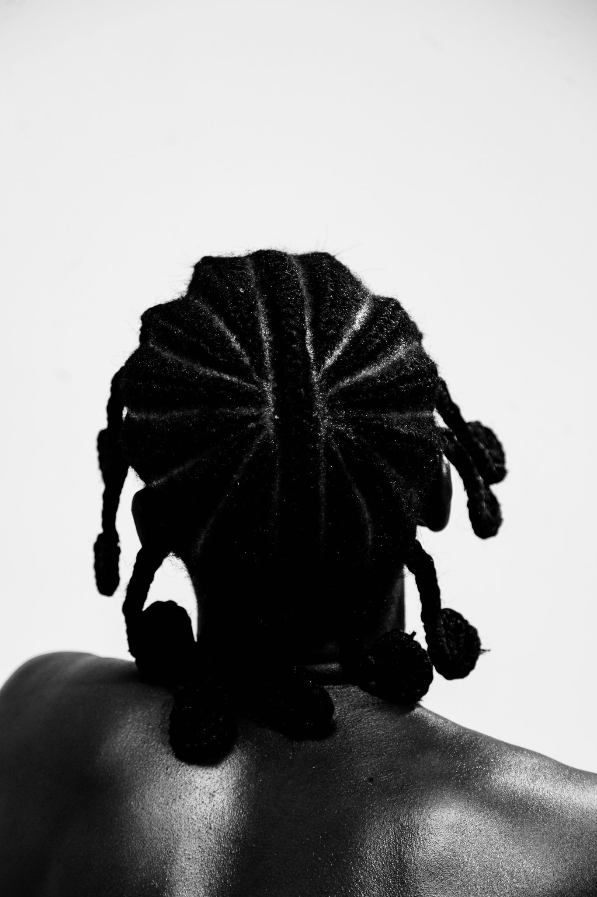

Welcome to Kenny at it again Portfolio
Capturing moments, telling stories, and framing emotions through the lens.


Capturing moments, telling stories, and framing emotions through the lens.
Adebayo Kehinde is a 25 years old Kwara born ibadan-based artist. He is a visual storyteller and a filmmaker. Photography has been his primary medium for visual storytelling. Gradualling he transitioned into mixed media(acrylic on canvas prints)and cinematography for better storytelling. My work explores the concept of "HOME", from both cultural and societal perspectives. Delving into the lives of men across various fields and themes of familial relationships,with a particular focu on Yoruba culture. Kehinde's photography strikes a balance between conceptual and documentary styles, seamlessly capturing both the imaginative and realistic aspects of his subjects. Kehinde has had the opportunity to exhibit hsi works at the EMERGING EXPRESSION curated by Creanth and ibadan art fair
Exploring real-life stories through compelling imagery.


Finding beauty in people and their surroundings.


Celebrating culture, traditions, and history through photography.



Highlighting contrasts and raw emotions in life.


Capturing candid moments and urban life with style.